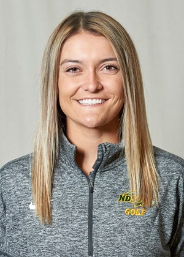
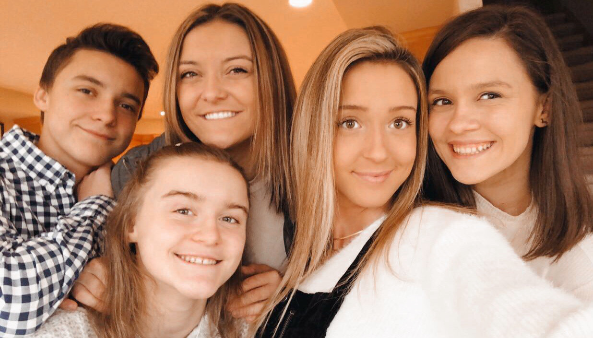
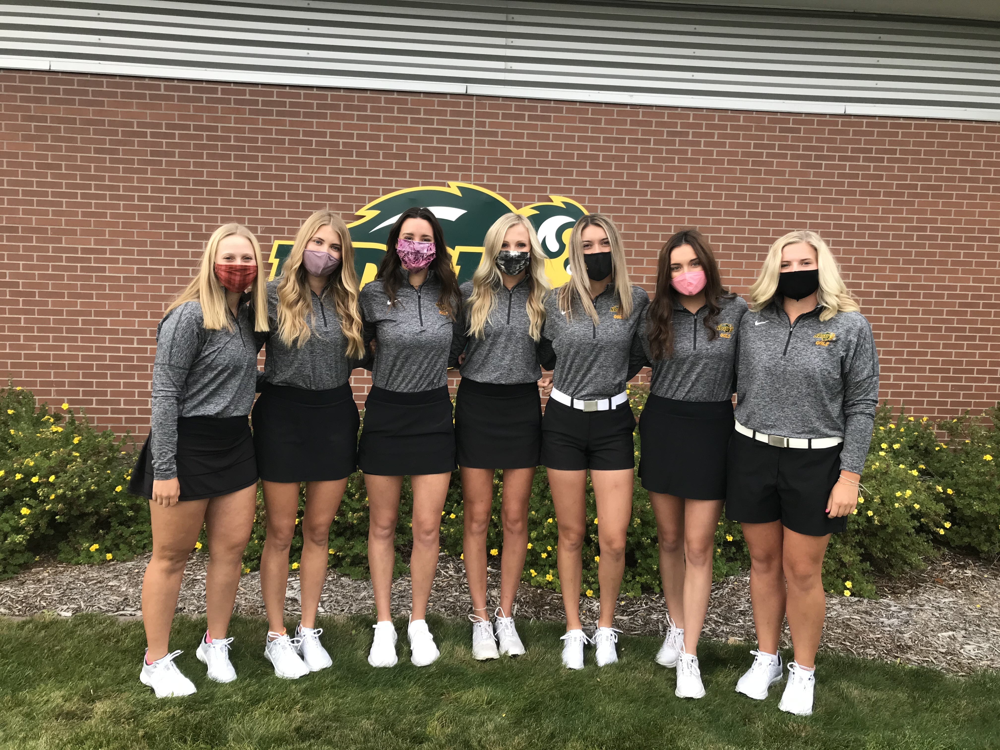

Who is Taylor McCorkle?
Inside my Life!

Welcome to my blog! I'm so happy you made it here and I'm excited to share more about the people and things that have shaped me into the person I am today. Three of the most important things in my life are God, my family, and golf but in this blog I will only be sharing with you my family and my golf career. Let's get started!
~ FAMILY ~

Here is a picture of my siblings and I. From left to right is Billy (the youngest of the five), Alix (second youngest of the five), me :), Andi (the middle child), and Morgan (the oldest of the five). I come from small town Oregon which just south of Madison, Wisconsin. I grew up as the second oldest of five kids and have two loving and supportive parents. My older sister, Morgan, played golf for the University of St. Thomas. One of my younger sisters, Andi, is a student at University of Wisconsin-Madison. My other younger sister, Alix, is a senior in high school and is about ready to head off to college. My brother, Billy, is the baby of the family and he is a sophomore in high school. The best part about growing up with lots of siblings is that each day was never boring, there was always something going on. From basketball practices and golf tournaments and dance classes, the McCorkle's were always busy. Back home, we live on a small 18-hole golf course so we were always out goofing around. That course is what really got me into golf. I remember so many times growing up when my siblings and I would run out into our backyard and have contests to see who could hit it the closest to the golf flag while my mother sat in her lawn chair with her laptop. Coincidentally, it just so happened that the house wi-fi connected just long enough for her to get some work done. I love my family, they are the people who made me who I am today and I am so thankful for them.
~ GOLF ~

As a backstory, I have been playing golf for 16 years since I come from a family of golfers. I didn't play competitively until I was in 6th grade, and from there on out I knew I wanted to keep playing golf as I got older. I played high school golf for Oregon High School and then have been playing college golf at NDSU for three and a half years now. The places I have had the opportunity to travel to and play with my teammates have made my college experience better than I could have ever imagined. Flashback to the spring of 2018 (my freshman year), my team won the Summit League Conference Tournament which qualified us to play in the NCAA tournament. The video here is a highlight reel of the conference tournament and the NCAA tournament. I still get chills watching it! Coincidentally, we were chosen to play a course in Madison, Wisconsin which just so happened to be the golf course that Wisconsin's high school state tournament is at each year. This was probably one of the best college golf memories I have had thus far because my family and friends were able to come out and watch since I am from the Madison area. Besides that tournament, my other best college golf memory was when we played a tournament in St. George, Utah. Everything clicked in my golf game that day, and I shot my personal record of 65 which also happened to break two NDSU school records. I always tell people that I am unbelievably lucky to be a Bison, and every day I am even more grateful for my time here at NDSU.